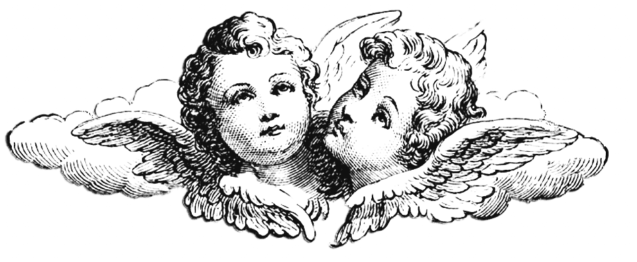

Глава 1. ЗАГАДОЧНЫЕ ИСТОКИ.
Нет большего препятствия для наслаждения великими художественными творениями, чем наша неготовность отказаться от предрассудков.

Глава 2. ИСКУССТВО ДЛЯ ВЕЧНОСТИ.
Картина, изображающая привычный мотив в непривычной манере, нередко осуждается как «неправдоподобная».

Глава 3. ВЕЛИКОЕ ПРОБУЖДЕНИЕ.
Великие творения всякий раз воспринимаются иначе. Они так же неисчерпаемы и непредсказуемы, как человеческие личности.
Глава 4. ЦАРСТВО ПРЕКРАСНОГО.

Чем чаще встречается в искусстве определенный сюжет, тем неколебимее наша убежденность, что он должен изображаться всегда по одной схеме.